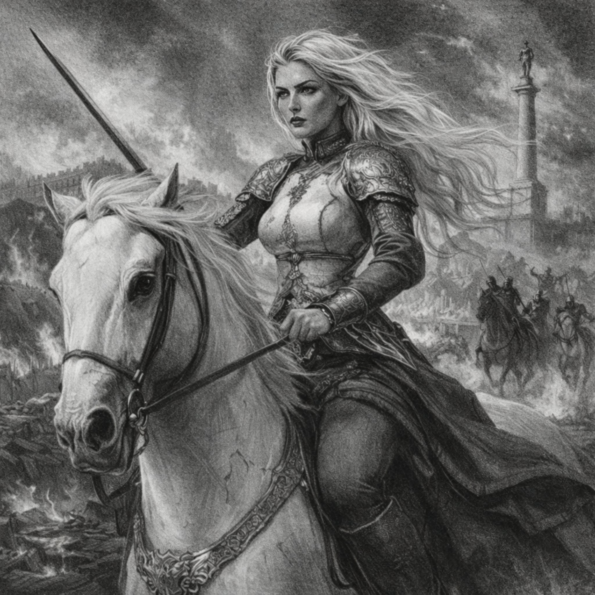
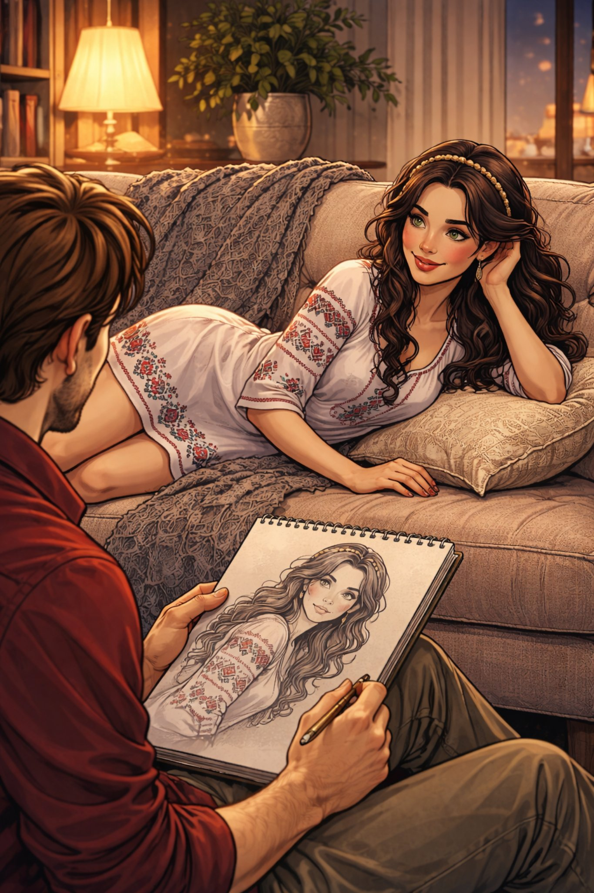
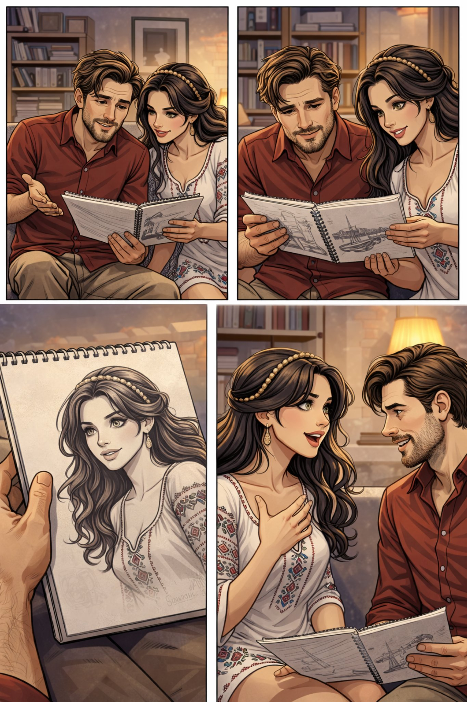

Поглавље 5: Слике будућности
Página individual del capítulo con lectura y ejercicios.



Луис и Наташа су у стану. Луис узима свеске са цртежима. Он показује Наташи своје радове.
"Гледај," каже Луис. "Ово је један од мојих омиљених цртежа."
Наташа гледа цртеж. То је пејзаж. Има планине, реку и лепо небо.
"Ово је прелепо," каже Наташа. "Ко ти је инспирација?"
Луис се осмехне. "Мој прапрадеда Фернандо. Он је био уметник. Ја цртам као он."
Наташа пита: "Шта још црташ?"
Луис одговара: "Цртам своје снове. Понекад цртам ствари које нисам видео у стварном животу."
Он прелистава свеску. Одједном, Наташа види нешто необично.
"Луис, шта је ово?" пита Наташа.
Луис гледа цртеж. То је портрет Наташе.
"Ово си ти," каже Луис. "Али ја сам ово нацртао пре него што смо се упознали."
Наташа је изненађена. "Како је то могуће?"
Луис каже: "Не знам. Можда сам имао сан о теби."
Наташа гледа Луиса. Она каже: "Луис, ти имаш дар. Ти црташ будућност."
Луис се смеје. "Можда. Али ја само цртам оно што осећам."
Наташа каже: "Цртај ме. Желим да ме нацрташ као Венеру пред огледалом."
Луис узима оловку. Он почиње да црта. Наташа седи мирно.
После неколико минута, Луис завршава цртеж. Наташа гледа цртеж.
"То сам ја," каже Наташа. "То је прелепо. Хвала ти."
Луис је срећан. Он гледа Наташу. Њихове очи се срећу.
Они се љубе.
Крај петог поглавља.
📚 Lista de Vocabulario Útil - Capítulo 5 📚
🎨 Arte y Creatividad:
- Свеска - Cuaderno 📓
- Цртеж - Dibujo 🎨 (Pl. Цртежи)
- Радови - Trabajos / Obras 🖼️
- Пејзаж - Paisaje 🌄
- Инспирација - Inspiración 💡
- Уметник - Artista 🎨
- Портрет - Retrato 🖼️
- Оловка - Lápiz ✏️
- Венера - Venus (diosa) 👸
- Огледало - Espejo 🪞
- Дар - Don / Talento 🎁
🧠 Cognados y Verbos:
- Показује - Muestra 👉
- Пита - Pregunta ❓
- Одговара - Responde 💬
- Препистава - Pasa las páginas 📖
- Нацртао - Dibujó ✏️
- Имао сан - Tuvo un sueño 💤
- Седи мирно - Se queda quieta/sentada tranquilamente 🪑
- Завршава - Termina ✅
😲 Expresiones de Asombro:
- Заиста - ¿De verdad? 😲
- Изненађена - Sorprendida 😯
- Могуће - Es posible 🤔
- Невероватно - Increíble 🤯
📘 Gramática Básica: El Pasado (Prošlo Vreme) 📘
En serbio, el pasado se forma usando el auxiliar BITI (ser/estar) en presente + el participio pasado del verbo principal.
Participio Pasado (para verbos terminados en -TI)
- Quitar -TI y añadir -O (para él/ella/eso)
- Пример: цртати -> цртао (él dibujó), цртала (ella dibujó)
Conjugación del Pasado (con el verbo ЦРТАТИ)
- Ја сам цртао/цртала (Yo dibujé)
- Ти си цртао/цртала (Tú dibujaste)
- Он је цртао (Él dibujó)
- Она је цртала (Ella dibujó)
- Ми смо цртали/цртале (Nosotros dibujamos)
- Ви сте цртали/цртале (Vosotros/Ustedes dibujaron)
- Они су цртали (Ellos dibujaron)
- Оне су цртале (Ellas dibujaron)
Ejemplos del texto:
- Луис је нацртао портрет Наташе. (Luis dibujó un retrato de Natasha).
- Ја сам имао сан о теби. (Yo tuve un sueño sobre ti).
- Мој прапрадеда је био уметник. (Mi tataraabuelo fue artista).
✍️ Ejercicios de Práctica - Capítulo 5 ✍️
Ejercicio 1: Traducción Sencilla
Traduce estas frases del Capítulo 5 al español.
1. Луис показује Наташи своје радове.
2. Ово је један од мојих омиљених цртежа.
3. Ко ти је инспирација?
4. Наташа је изненађена.
5. Луис узима оловку и почиње да црта.
1. Luis le muestra a Natasha sus trabajos.
2. Este es uno de mis dibujos favoritos.
3. ¿Quién es tu inspiración?
4. Natasha está sorprendida.
5. Luis toma el lápiz y empieza a dibujar.
Ejercicio 2: Conjuga en Pasado
Conjuga estos verbos en pasado para "Él" (Он је...).
1. гледати (mirar) -> _______
2. учити (aprender) -> _______
3. волети (amar) -> _______
4. питати (preguntar) -> _______
5. живети (vivir) -> _______
1. гледао
2. учио
3. волео
4. питао
5. живео
Ejercicio 3: Completa con el Auxiliar Correcto
Completa las frases con сам, си, је, смо, сте, су.
1. Ја _______ цртао пејзаж.
2. Ти _______ питао за инспирацију.
3. Она _______ видела цртеж.
4. Ми _______ седели мирно.
5. Они _______ били уметници.
1. сам
2. си
3. је
4. смо
5. су
Ejercicio 4: Forma tu Propia Frase en Pasado
Crea una frase en pasado sobre algo que hiciste ayer, usando la estructura JEST + PARTICIPIO.
Ejemplo: Јуче сам гледао филм. (Ayer vi una película).
Tu frase: _________________________________